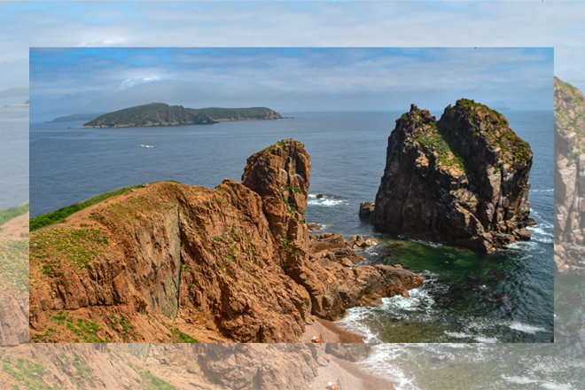

Информация об авторе
Меня зовут Катя. Я изучаю веб-дизайн первый год.
Это мой первый сайт и я очень старалась. Еще я занимаюсь фигурным катанием и английским. Еще я люблю вязать, рисовать и читать.
Этот сайт я решила сделать про Приморский край, потому что там живут мои родственники. Каждый год я езжу туда летом в гости к бабушке. Поэтому я хочу, чтобы об этом месте узнали как можно больше людей. Все, о чем я рассказываю на страничках сайта, я видела своими глазами. Я старалась рассказать о самых популярных объектах этого замечательного места.
Еще у меня есть очень милый кот, который очень любит кушать и часто выпрашивает вкусняшки, смотря на всех молящими глазками. Еще он очень много играет.
